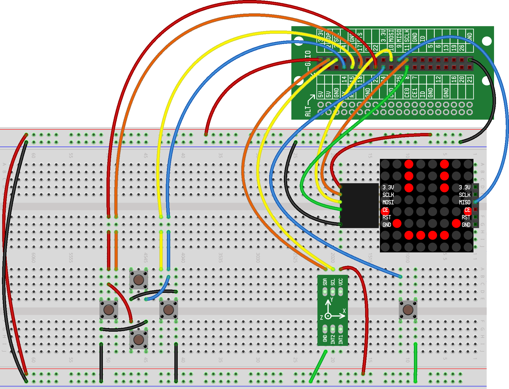

This is a minecraft project
Accelerometer Cell
LED Matrix Cell
Having issues? Check out the Troubleshooting Guide.
The Introduction
The Hardware

The Software
from rstem.button import Button from rstem.led_matrix import FrameBuffer, Sprite from rstem.mcpi import minecraft, control, block from rstem.mcpi.vec3 import Vec3 import time from math import atan2, degrees control.show() mc = minecraft.Minecraft.create() arrow0deg = Sprite(""" -------- -------- -----F-- ------F- FFFFFFFF ------F- -----F-- -------- """) arrow15deg = Sprite(""" -------- -----F-- ------F- ----FFFF FFFF--F- -----F-- -------- -------- """) arrow30deg = Sprite(""" -------- ----FFFF ------FF ----FF-F ---F---F -FF----- F------- -------- """) arrow45deg = Sprite(""" ----FFFF ------FF -----F-F ----F--F ---F---- --F----- -F------ F------- """) arrow60deg = Sprite(arrow30deg).flip().rotate(-90) arrow75deg = Sprite(arrow15deg).flip().rotate(-90) arrows = [ Sprite(arrow0deg).rotate(0), Sprite(arrow15deg).rotate(0), Sprite(arrow30deg).rotate(0), Sprite(arrow45deg).rotate(0), Sprite(arrow60deg).rotate(0), Sprite(arrow75deg).rotate(0), Sprite(arrow0deg).rotate(90), Sprite(arrow15deg).rotate(90), Sprite(arrow30deg).rotate(90), Sprite(arrow45deg).rotate(90), Sprite(arrow60deg).rotate(90), Sprite(arrow75deg).rotate(90), Sprite(arrow0deg).rotate(180), Sprite(arrow15deg).rotate(180), Sprite(arrow30deg).rotate(180), Sprite(arrow45deg).rotate(180), Sprite(arrow60deg).rotate(180), Sprite(arrow75deg).rotate(180), Sprite(arrow0deg).rotate(270), Sprite(arrow15deg).rotate(270), Sprite(arrow30deg).rotate(270), Sprite(arrow45deg).rotate(270), Sprite(arrow60deg).rotate(270), Sprite(arrow75deg).rotate(270), ] def vector_angle(start, end): return degrees(atan2(end.x - start.x, end.z - start.z)) compass = Button(24) fb = FrameBuffer() while True: if compass.presses(): heading = control.get_heading(mc) angle_to_origin = vector_angle(mc.player.getPos(), Vec3(0,0,0)) compass_angle = 90 + (angle_to_origin - heading) fb.erase() arrow_index = round(compass_angle/15) % 24 fb.draw(arrows[arrow_index]) fb.show() time.sleep(0.01)
The Challenge